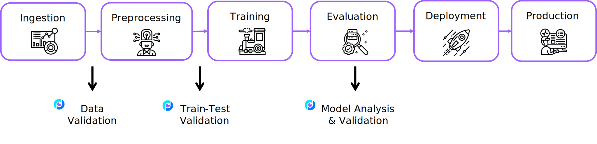

Welcome to Deepchecks!#
Deepchecks is the leading tool for validating your machine learning models and data, and it enables doing so with minimal effort. Deepchecks accompanies you through various validation needs such as verifying your data’s integrity, inspecting its distributions, validating data splits, evaluating your model and comparing between different models.
Get Started#
Head over to our Quickstart in 5 minutes tutorial,
and click on or on  to launch it and see it in action,
or see our Installation to install it locally and continue from there.
to launch it and see it in action,
or see our Installation to install it locally and continue from there.
Note
The package’s output is suited for running in any Python environment. The output is best viewed in Jupyter Notebooks (or JupyterLab), but it can also run in any IDE and be exported as an HTML report.
When Should You Use Deepchecks?#
While you’re in the research phase, and want to validate your data, find potential methodological problems, and/or validate your model and evaluate it.
See the When Should You Use Section in the User Guide for an elaborate explanation of the typical scenarios.
How Does it Work?#
Suites are composed of checks. Each check contains outputs to display in a notebook and/or conditions with a pass/fail/warning output. For more information head over to our Key Concepts in the User Guide.
What Do You Need in Order to Start?#
Depending on your phase and what you wish to validate, you’ll need a subset of the following:
Raw data (before pre-processing such as OHE, string processing, etc.), with optional labels
The model’s training data with labels
Test data (which the model isn’t exposed to) with labels
A supported model that you wish to validate (scikit-learn models, XGBoost, or any model implementing the predict method in the required format)
Supported Data Types#
Currently the package supports tabular data. Stay tuned for the upcoming Computer Vision release.
See More#
Note
In addition to perusing the documentation, please feel free to to ask questions on our Slack Community, or to post a issue or start a discussion on Github.
For additional usage examples and for understanding the best practices of how to use the package, stay tuned, as this package is in active development!